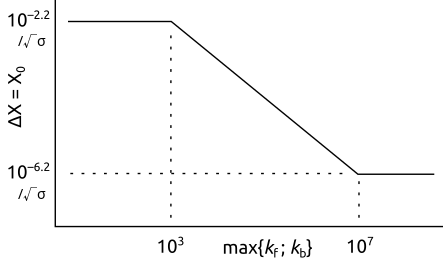

Simulation settings
Number of coefficients for derivative and current simulation:
Dimensionless potential step Δθ and grid expansion factor γe:
First dimensionless distance in grid X0 = 10−F / √σ where σ is the dimensionless scan rate. F changes with log10(max. homogeneous rate [1/s]) = lograte, as:
F =
when lograte <
F =
when lograte >
...and is varied linearly between these values of lograte. The relationship is thus as depicted in the following image, where it can be observed that the dimensionless distance next to the electrode is smaller when the reaction rate is increased:
